Administrator Manual
Complete operational guide for Principal, Accountant, and Office Staff portals.
Whenever features are added, changed, or removed, this manual is updated to match. You can always find the latest version through the app or on our website. For larger changes that significantly affect how the college operates day-to-day, Pixelaks Technologies will additionally send an updated PDF copy of this manual directly to the college administration.
Authentication — Administrative Users
All administrative users access Adhyora through the central gateway by selecting their respective role. Only Principal, Accountant, and Office Staff roles are covered in this document.

1. Principal Access
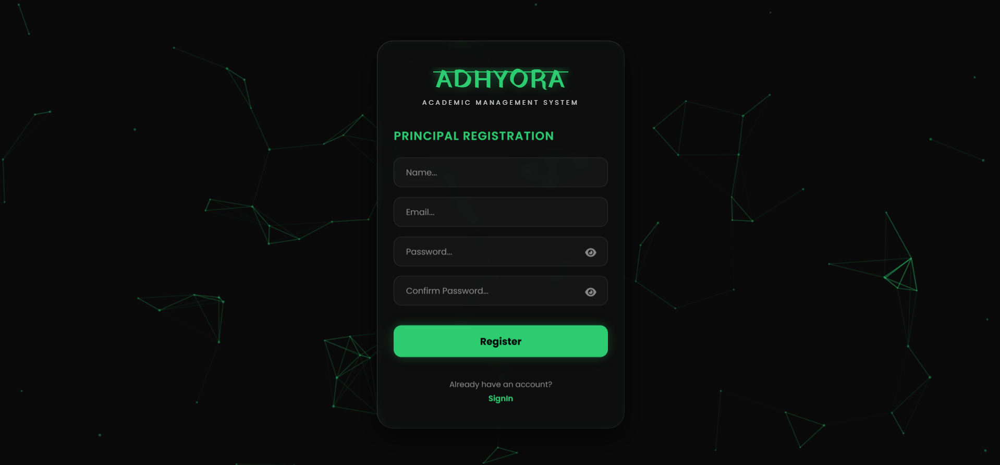
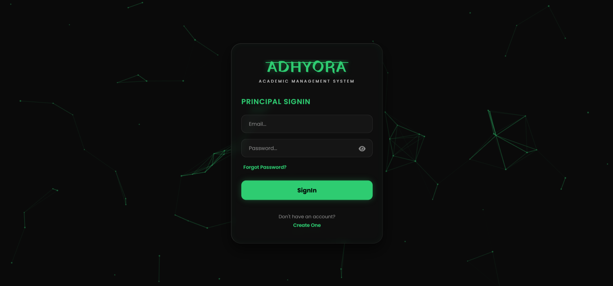
- Registration: Only one Principal account can be registered per college. Click "Create One", enter Name, Email, and Password. The system locks out further Principal registrations after this.
- Sign In: Enter registered Email and Password, then authenticate with Security PIN or biometrics.
2. Accountant Access
- Select Accountant on the main gateway. Register with Name, Email, and Password.
- Account is placed in Pending status until the Principal approves it from the Teacher/Staff List.
- On first login after approval, set up a mandatory 4-digit Security PIN before accessing any fee data.
3. Office Staff Access
- Select Office Staff on the main gateway. Register with Name, Email, and Password.
- Account is placed in Pending status until the Principal approves it.
- On first login after approval, set up a mandatory 4-digit Security PIN.
- Multiple Office Staff accounts can be active simultaneously — there is no single-account restriction.
Principal Portal Guide
Welcome to the Adhyora Principal Dashboard. As the master administrator, this interface provides you with complete control over the institution's academic structure, user access, and global settings.
Institution Type Selection
The very first time you log in as Principal, before anything else loads, Adhyora asks you to declare your institution's academic structure. This single choice permanently shapes how the rest of the dashboard behaves.
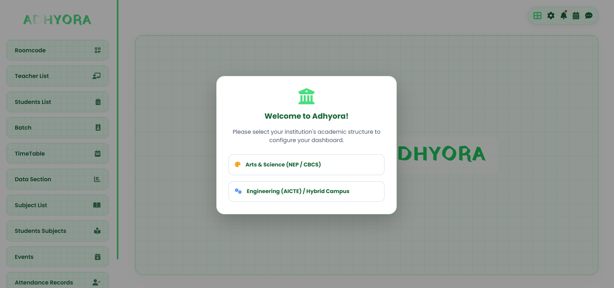
- Arts & Science (NEP / CBCS): Select this if your college follows the standard NEP/CBCS credit structure (BA, BSc, BCom, etc.). The dashboard remains in its standard single-stream layout.
- Engineering (AICTE) / Hybrid Campus: Select this if your institution runs an AICTE engineering program, or if it is a hybrid campus that runs both Engineering and Arts & Science departments side by side.
collegeType permanently. Choosing incorrectly will require contacting Pixelaks Technologies support for a manual database correction.
First-Time Login & College Setup Flow
Once your institution type is set, you must complete the remaining initialization sequence to bring the college online.
1. Security PIN & Biometrics
As the master administrator, you possess absolute authority. A secure lock screen must be established.
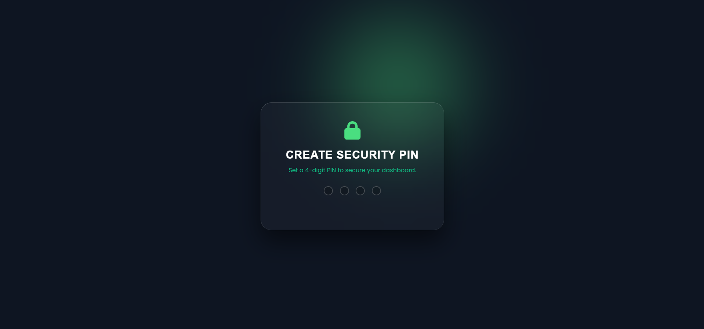
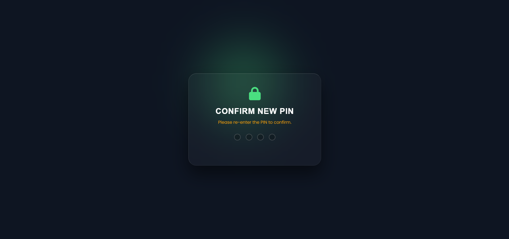
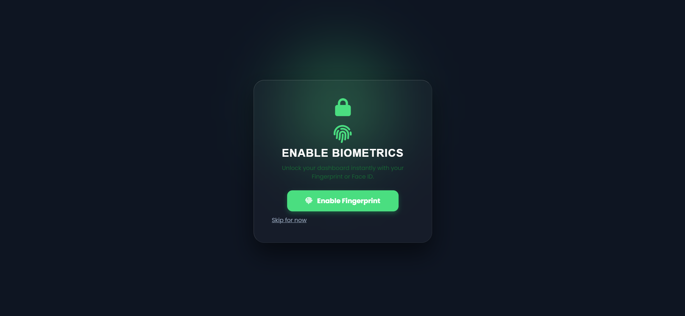
- Create PIN: Enter a secure 4-digit PIN, then re-enter it to confirm. You will use this PIN to authenticate destructive actions (like deleting users) and to unlock the app on future visits.
- Enable Biometrics: Link your device's fingerprint or Face ID for faster logins. You can click "Skip for now" and configure this later in Settings.
2. The Initialization Workflow
Once security is established, you must follow this exact sequence to configure the college:
- Step 1 - Data Ingestion: Navigate immediately to the Data Section. Set up the daily bell timings, upload the Master CSV files for Students, Subjects, and the Academic Calendar, and configure your Attendance Rule Configuration (the attendance-to-marks tiers). If utilizing the Fee Portal, configure your Razorpay keys and fee structures here.
- Step 2 - Timetable Framework: Go to the Master Timetable Management panel. Define the structural categories for every period of the week.
- Step 3 - Faculty Onboarding: Open the Roomcode Manager. Distribute the generated department codes to your respective Heads of Department (HODs) so they can invite their teachers.
- Step 4 - Teacher Verification: As teachers sign up, go to the Teacher List to approve their accounts and grant HOD status to the department heads.
- Step 5 - Final Class Assignments: Instruct all approved teachers to declare their subjects. Once complete, return to Assign General Subjects to map faculty to the shared courses (VAC, AECC, etc.).
Data Section Overview
The foundation of your college's Adhyora system is managed in the Data Section. This is where you will configure your college's timings and upload the core database of students, subjects, and academic holidays.
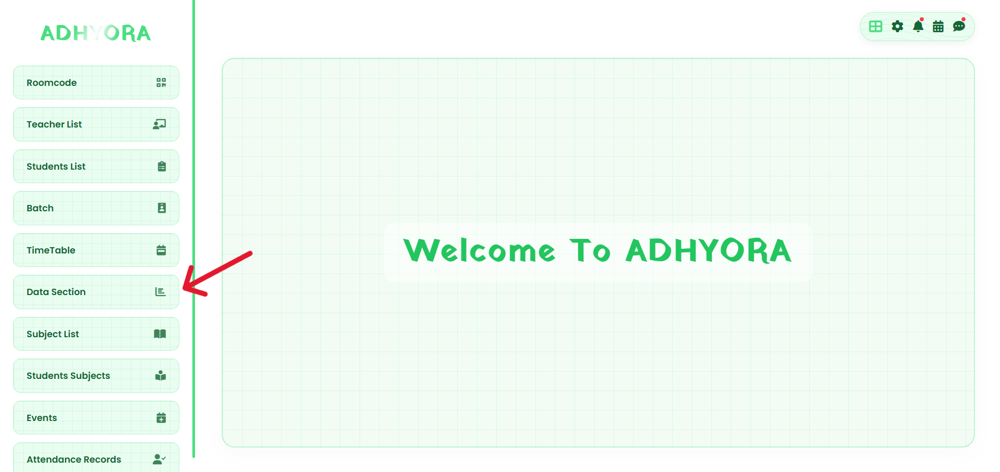
- To access this area, click the Data Section icon on your main dashboard.
- Note: Because this section controls sensitive global data, many actions here will require your 4-digit Security PIN to execute.
Timetable Configuration
Before assigning classes, you must define the physical bell schedule for your institution.
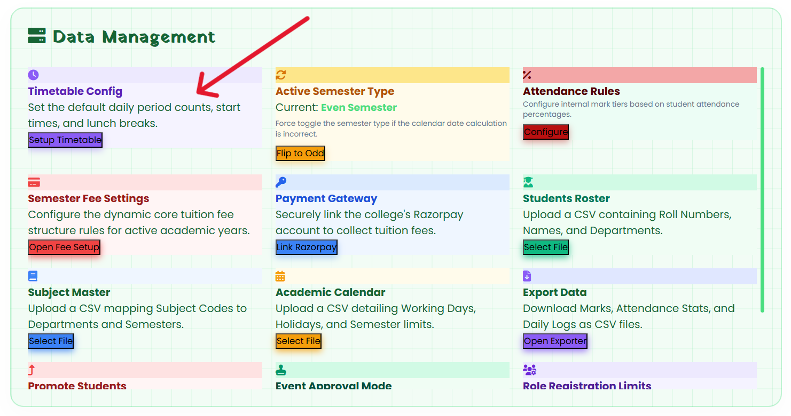
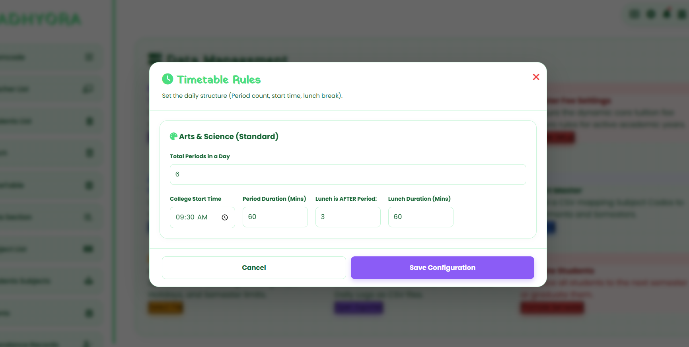
- Click Timetable Setup to open the configuration panel.
- Period Count: Enter the total number of periods in a standard working day.
- Start Time & Duration: Enter the time the first bell rings and how many minutes each period lasts.
- Lunch Break: Define after which period the lunch break occurs, and its duration in minutes.
- Click Save Configuration. The system will automatically generate the empty daily timeline for all students and teachers based on this math.
Attendance Rule Configuration
Also inside the Data Section, the Attendance Rule Configuration card lets you define how a student's overall attendance percentage converts into internal (CIA) attendance marks. These tiers are used automatically anywhere the app calculates a student's attendance-based internal mark.
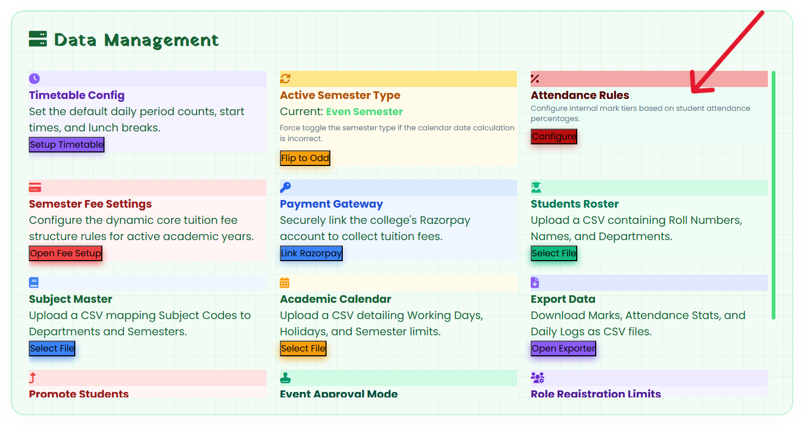
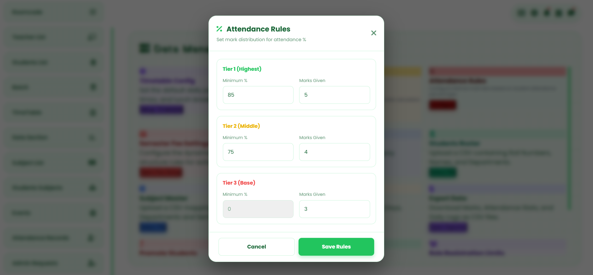
- The panel shows three tiers. For each of the first two tiers, enter a Minimum Attendance % and the Marks a student earns if their attendance meets or exceeds that threshold.
- Tier 1 is checked first (e.g., 85% and above → 5 marks), followed by Tier 2 (e.g., 75% and above → 4 marks).
- Tier 3 is the catch-all fallback — it only needs a Marks value, and is automatically applied to any student who falls below both Tier 1 and Tier 2 thresholds (e.g., 3 marks).
- Click Save Rules, then confirm with your Security PIN to push the new tiers live.
Semester Fee Settings (Pro/Ultimate Tiers)
Configure the exact fee requirements for different departments and semesters.
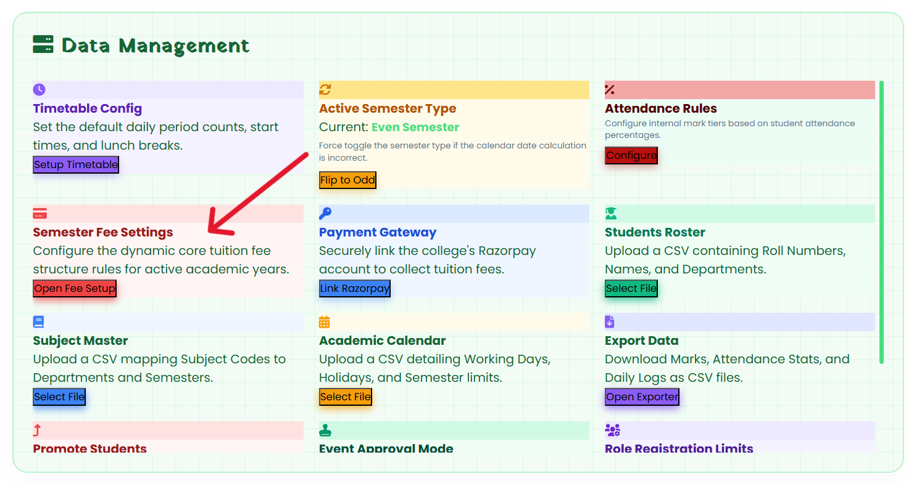
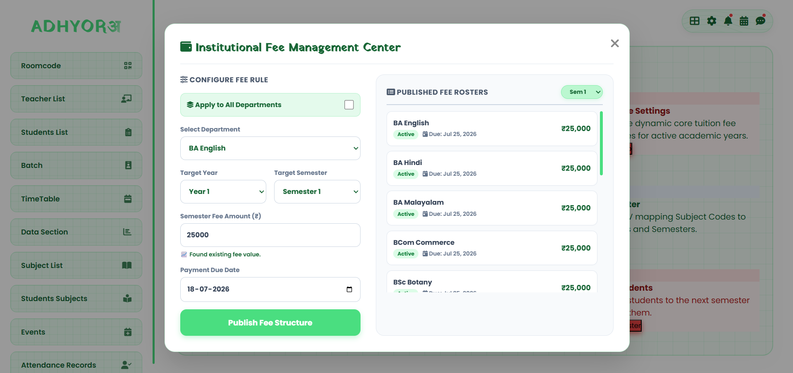
- Click Open Fee Setup to launch the Institutional Fee Management Center.
- Select the specific Department, Target Year, and Target Semester you are configuring.
- Enter the Fee Amount (₹).
- Set a Payment Due Date deadline. The system automatically defaults to 30 days after the start of the semester (based on calendar data), but this can be adjusted.
- Click Publish Fee Structure. This immediately pushes the fee ledger to the selected students' portals.
Payment Gateway (Pro/Ultimate Tiers)
To collect tuition fees directly from students, the college must link its institutional Razorpay account to Adhyora.
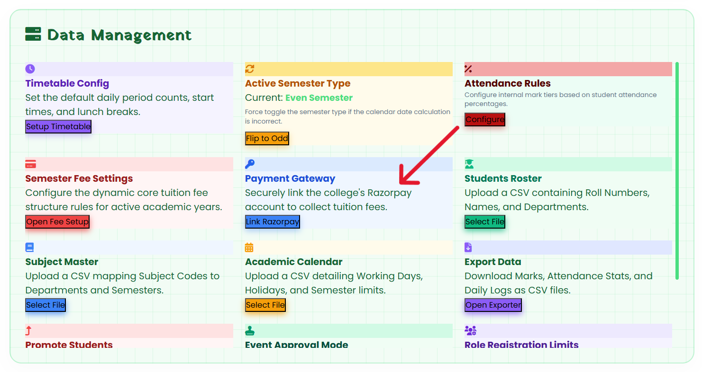
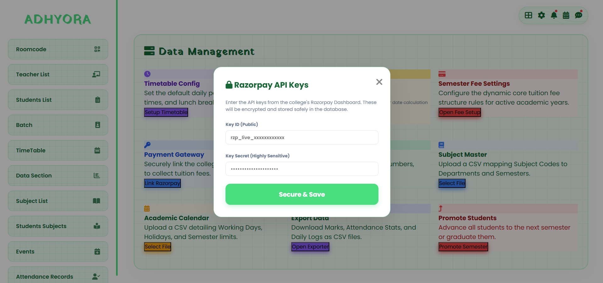
- Click Link Razorpay to open the API Key configuration window.
- Enter the Key ID (Public) and the highly sensitive Key Secret obtained from your college's Razorpay Dashboard.
- Click Secure & Save. The keys are encrypted and stored safely on the cloud database.
Students Roster
This card registers your student body. When a new academic year begins, you simply upload the new first-year students' CSV using this exact same format.
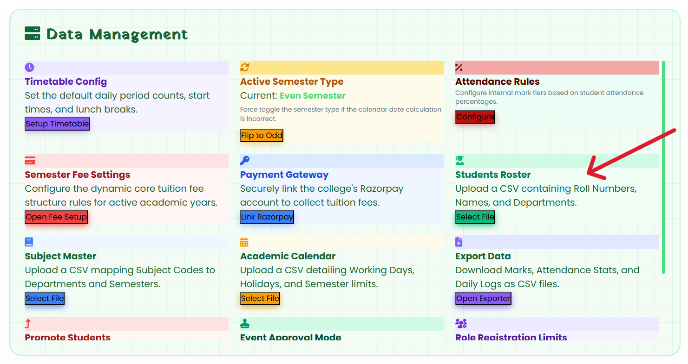
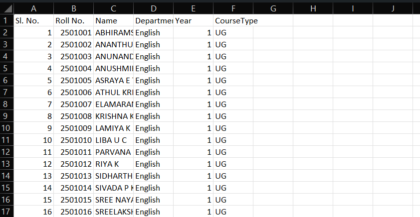
- Required Headers:
Sl No,Roll No,Name,Department,Year, andCourse Type. - Click Select File and choose your Students CSV.
- The system will parse the file and ask for your Security PIN to verify the action. Enter your PIN to finalize the upload to the secure server.
Subject Master
This card defines the master curriculum. It maps out which subjects belong to which departments and semesters.
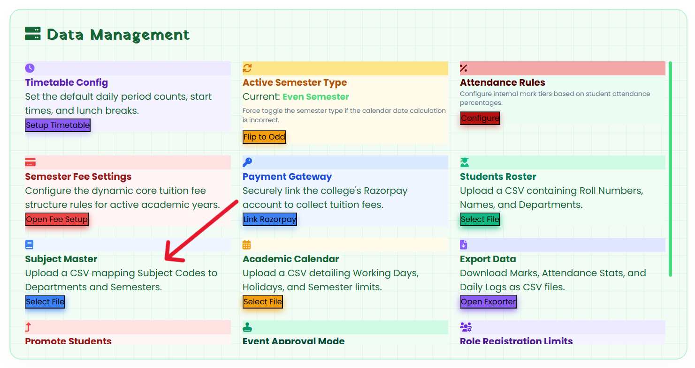
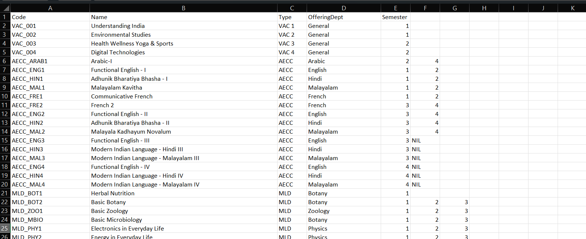
- Required Headers:
Code,Name,Type(e.g., AECC, MJD, CORE),OfferingDept, andSemester. - Multiple Semesters: If a subject is taught across multiple semesters, do not list them in the same cell. Instead, place each semester number into its own adjacent column to the right (e.g., Column E: 1, Column F: 2). The system will automatically detect all additional semester columns.
- General Subjects: If a subject is open to the entire college and not bound to a specific department, list the Offering Department as
General. - Select the file, verify the system's count, and enter your Security PIN to upload.
Academic Calendar (CSV Upload)
This card synchronizes the Attendance Predictor and the global Timetable with your institution's specific holidays and semester bounds.
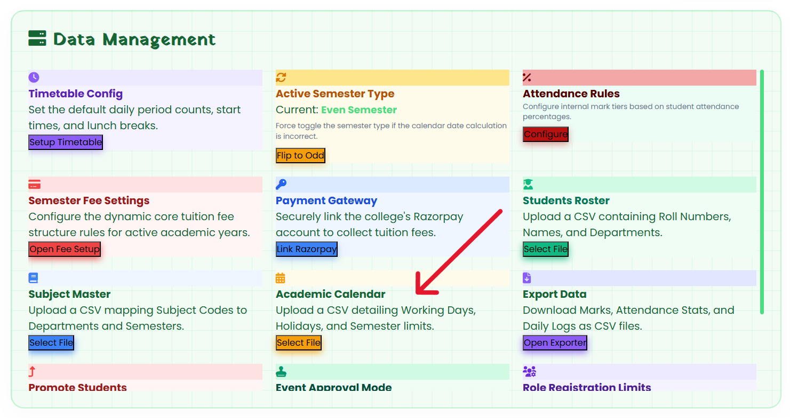
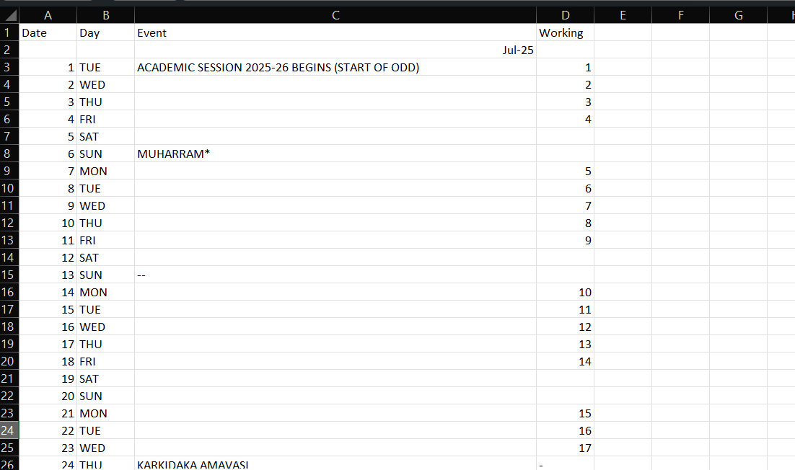
- Required Headers:
Date(YYYY-MM-DD),Day,Event, andWorking. - Semester Bounds: You must include rows that explicitly state "START OF ODD", "END OF ODD", "START OF EVEN", and "END OF EVEN" in the event column so the system knows when semesters transition.
- Once uploaded, the system validates the calendar format. Enter your Security PIN to lock the calendar into the database.
- Note: This upload only seeds the base calendar. Day-by-day edits afterward (declaring a sudden holiday, making a weekend a working day, etc.) are done from the Academic Calendar widget, not by re-uploading this file.
Export Data
Administrators can extract the entire academic database into clean, formatted Excel-ready CSV files for offline analysis and institutional record-keeping.
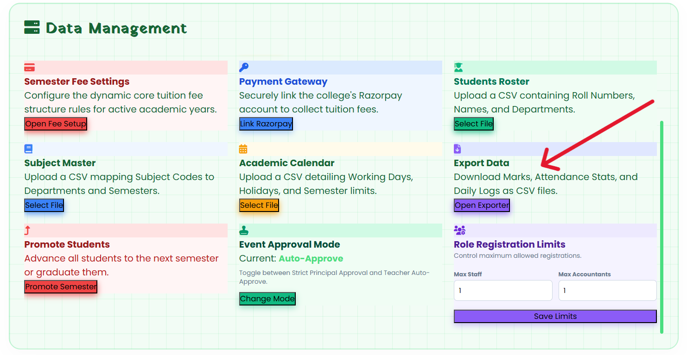
- Click Open Exporter in the Data Section.
- Select the specific Department and Academic Year you wish to pull records for.
- Choose one of the three export types below to generate the file.
Available Export Types
1. Internal Marks (NEP Formatted)
Generates a comprehensive matrix of test scores, assignment grades, and attendance marks for every student in the selected department.
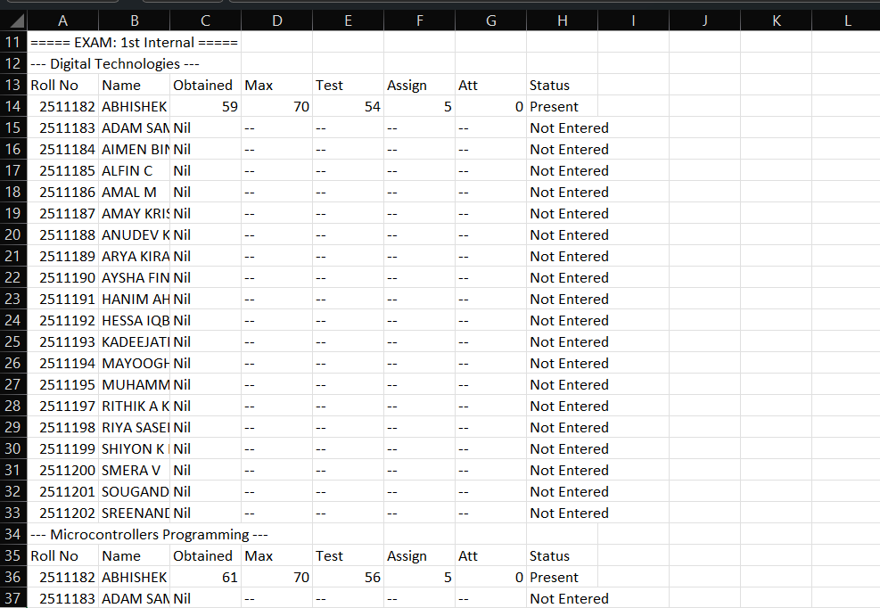
2. Attendance Statistics (Overall & Subject-Wise)
Extracts the total periods conducted versus periods attended, calculating both the strict overall percentage and the individual subject percentages.
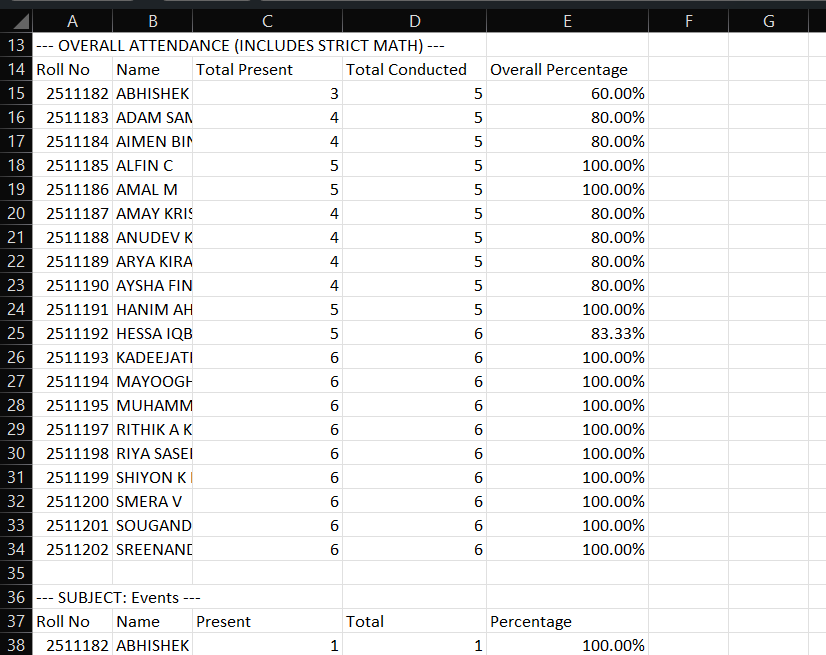
3. Daily Attendance Logs (P1 to P6)
The most detailed export available. Provides a granular, day-by-day, period-by-period (P1 through P6) log of exactly when a student was marked Present (P) or Absent (A).
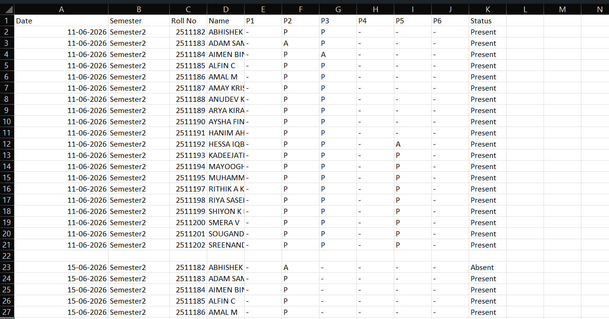
Promote Students (End of Year)
At the conclusion of the academic year, the Principal must initiate the global promotion sequence.
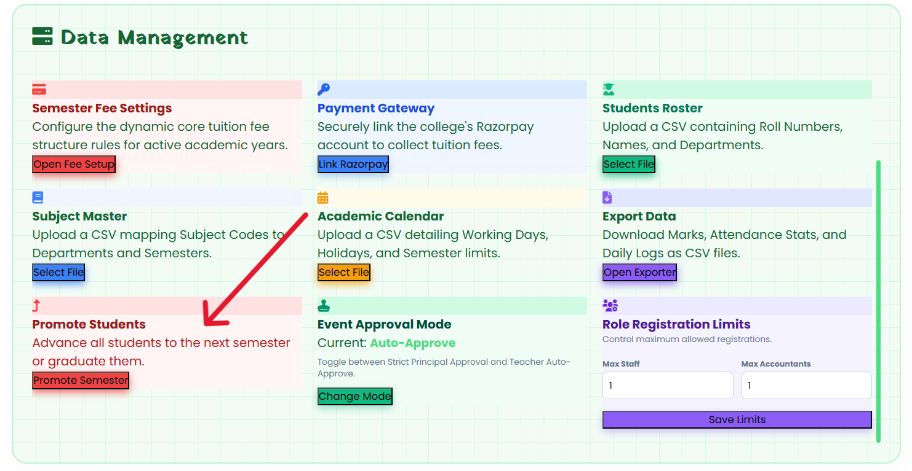
- Click Promote Semester.
- The system will automatically shift all students up by one academic year (e.g., Year 1 becomes Year 2).
- Students in their final year (e.g., Year 3 or 4) are safely graduated and moved to the Alumni database.
- Note: After the promotion sequence is complete, the institution will have zero 1st Year students. You must use the Students Roster card above to ingest the newly enrolled batch of 1st years.
Active Semester Type (Odd/Even)
Adhyora automatically detects whether the institution is currently in an Odd or Even semester by cross-referencing today's date with the bounds uploaded in your Academic Calendar CSV. If the automatic date calculation is incorrect, or the college transitions to a new semester ahead of schedule, you can manually override it.
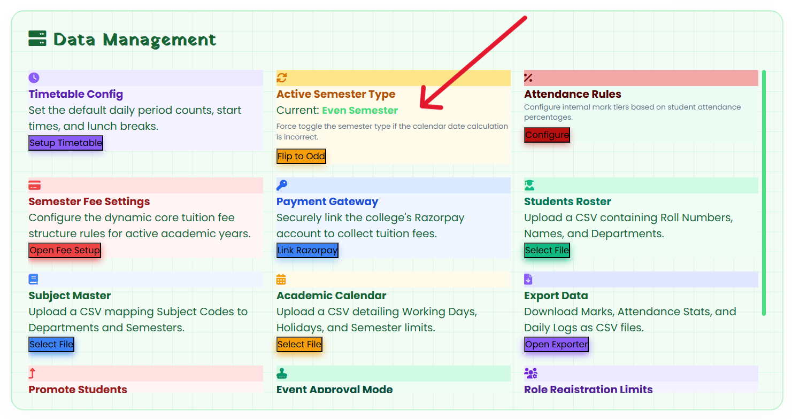
- Click the Flip to Odd/Even button next to the Active Semester status.
- The system will instantly invalidate the local caches of all student and teacher devices, forcing their apps to reload and display the newly selected semester data.
Event Approval Mode
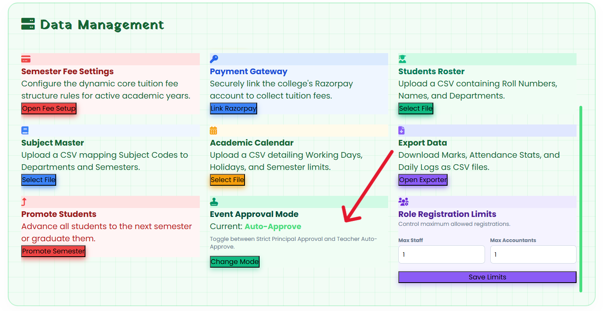
This card controls whether teacher-submitted event attendance requests need your manual sign-off, or are granted automatically. By default, every request requires manual review (Strict mode), as described in Event Requests & Approvals. If your institution runs frequent, low-risk events, you can switch to Auto-Approve instead.
- The card displays the Current mode at a glance.
- Click Change Mode and confirm the change in the popup that appears, which clearly states which mode you are switching to.
- Strict Principal Approval: Every event request stays Pending until you manually review and approve it from the Event Requests panel.
- Auto-Approve: Event attendance requests are granted automatically the moment a teacher submits them, without waiting for Principal review.
Role Registration Limits
This card controls the maximum number of Office Staff and Accountant accounts your institution can have approved at once.
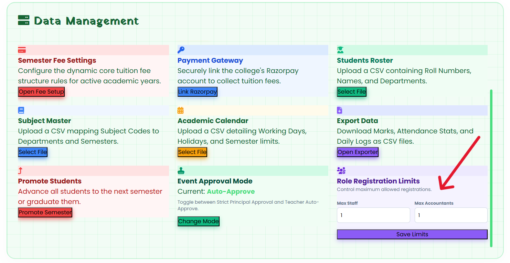
- Max Staff: Enter the maximum number of Office Staff accounts allowed to be approved at once.
- Max Accountants: Enter the maximum number of Accountant accounts allowed to be approved at once.
- Click Save Limits to update the caps securely.
Roomcode Manager (Teacher Access)
Adhyora uses a secure, department-based Roomcode system to onboard faculty. The system automatically identifies your college's departments and course durations based on the Students CSV you uploaded.
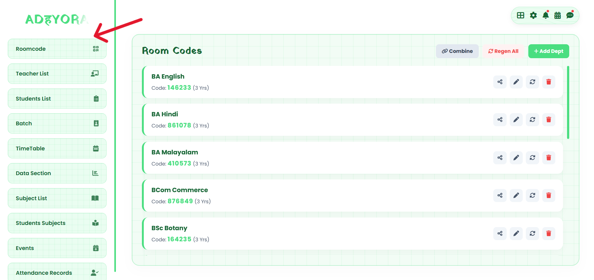
Understanding & Sharing Roomcodes
Each department is assigned a unique 6-digit Roomcode. Teachers must enter this code when signing up to automatically join their respective department.
- Distribution: The Principal shares the specific Roomcode with the Head of Department (HOD). The HOD then distributes it to the other teachers in their department.
- Share Code: Click the Share icon (network node) next to any department to instantly copy or send the code.
Managing Departments
- Add Missing Departments: If a department wasn't auto-detected, click the green + Add Dept button at the top right to manually declare its name and duration.
- Edit Duration: If the course length (e.g., 3 Yrs) is incorrect, click the Edit (Pen) icon to modify it.
- Delete Department: If a department is no longer supported by the college or was created by mistake, click the red Trash icon to permanently delete it.
Security & Regeneration
- Regenerate Single Dept: Click the Refresh icon next to a department to generate a brand new code. Note: This will instantly log out all existing teachers in that department. They must use the new code to log back in.
- Regen All: Click the red Regen All button at the top to reset every single department code simultaneously, forcing a global teacher logout across the entire college.
Department Stream (Engineering / Hybrid Colleges Only)
This control only appears if you selected Engineering (AICTE) / Hybrid Campus during Institution Type Selection. Since a hybrid campus runs Engineering and Arts & Science departments on different bell schedules, each department must be tagged with its correct stream.
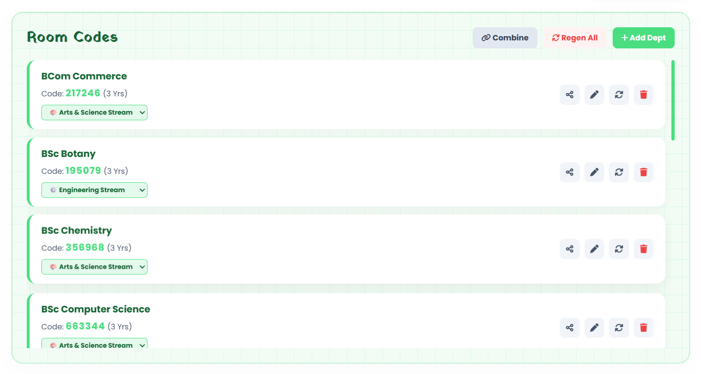
- Every department card in the Roomcode Manager shows a small stream dropdown — ⚙️ Engineering Stream or 🎨 Arts & Science Stream.
- The system makes a first-guess automatically (departments with names containing "BCom", "BA", or "BSc" default to Arts & Science; everything else defaults to Engineering), but you should always verify this is correct for every department.
- Change the dropdown to the correct stream if needed. This selection determines which bell schedule (period count and timings) that department's timetable will follow.
Teacher List & Management
The Teacher List acts as the central hub for managing faculty access and reviewing their academic contributions. When teachers use a Roomcode to sign up, their access request appears here for the Principal to review.
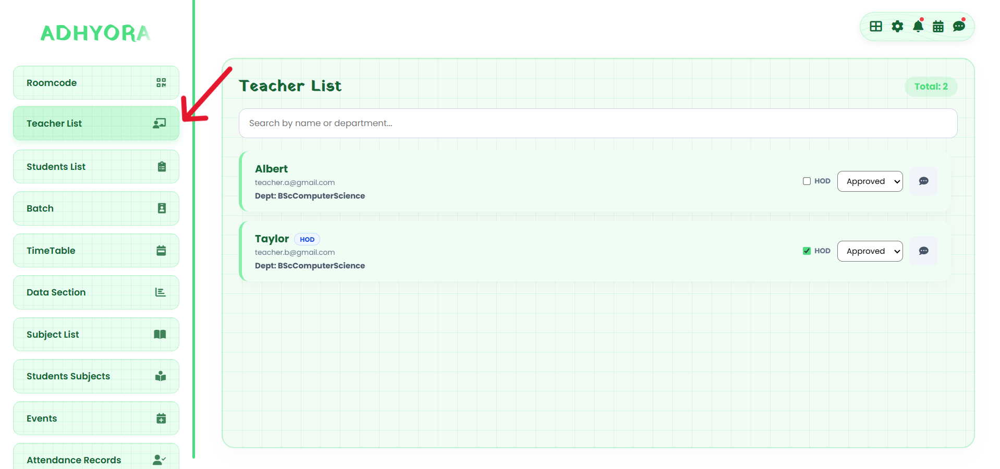
1. Faculty Approvals & HOD Assignment
- Review Requests: You will see the teacher's Name, Email Address, and the Department they are attempting to join.
- Approve or Decline: Use the dropdown menu to change their status from Pending to Approved (granting app access) or Declined.
- Assign HOD: If the teacher is the Head of the Department, check the HOD box next to their name to grant them elevated department privileges.
2. Direct Messaging
You can send official, targeted messages directly to individual teachers from this list.
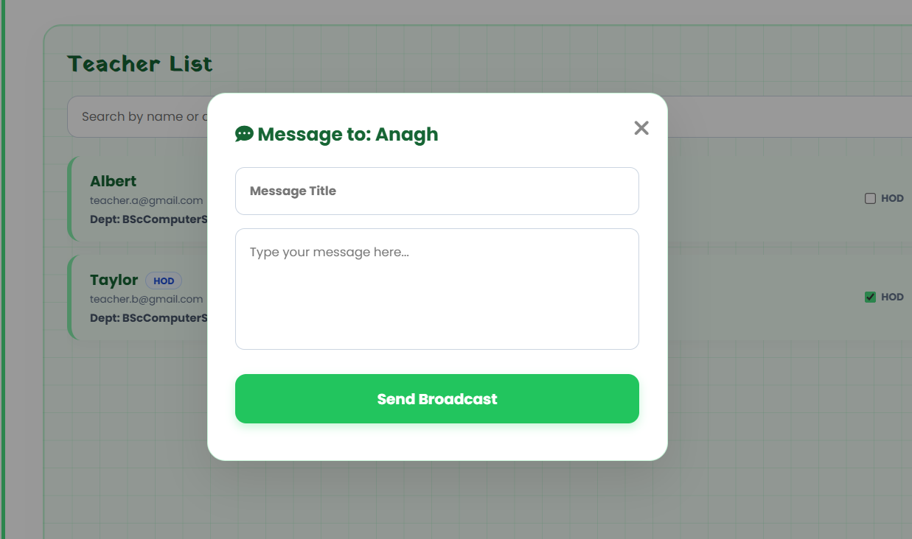
- Click the Chat Icon on a teacher's card to open the message popup.
- Enter a Message Title and your Description.
- Click Send Broadcast. The teacher will receive this message directly in their personal app Inbox.
Teacher Performance Dashboard
Clicking directly on any approved Teacher's Name Card will open their detailed, individual performance dashboard.
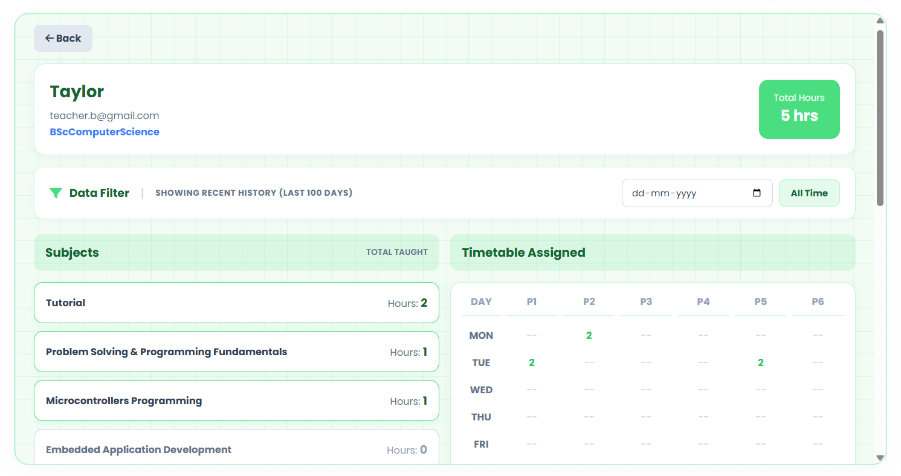
Workload & Timetable Analysis
- Total Hours Taught: A quick glance at the top right shows the aggregate number of hours this teacher has conducted classes over the selected timeframe.
- Data Filters: Use the Date Picker to see exactly how many hours were taught on a specific day, or click All Time to view the entire logged history.
- Subject Breakdown: The left panel itemizes exactly how many hours the teacher has spent teaching each of their assigned subjects.
- Timetable Assigned: The right panel displays the teacher's weekly schedule. It shows exactly which period they are teaching and displays the Semester Number for that specific class block.
Attendance Timeline Logs
Scroll down the dashboard to view the complete audit trail of this teacher's class records.
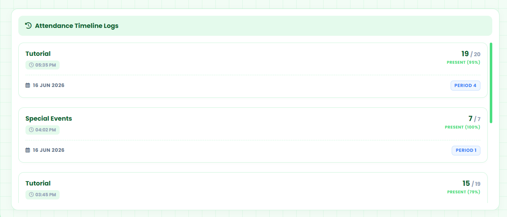
- This chronological timeline records every single period the teacher has submitted attendance for.
- It displays the Subject Name, the exact Time and Date the attendance was submitted, the Period Number, and the present-to-total ratio for that specific class.
Student List & Profiles
The Student List provides a complete directory of all students enrolled in your institution. From here, you can manage their app access, update their details, and dive deep into their individual academic performance.
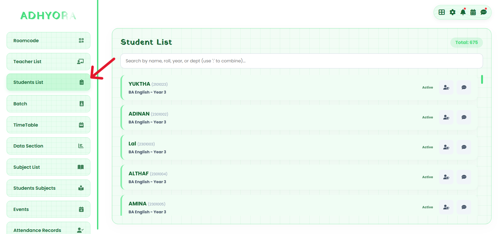
1. Managing Student Access & Details
Click the Shield Icon next to any student to open the Admin Edit panel.
- Correct Names: If a student's name has a typo, you can manually correct it here and save it to the database.
- Revoke Access: Change the status from Approved to Declined to instantly log the student out of the app and block their access.
- Delete Student: If a student leaves the college (e.g., Transfer Certificate applied), click the red Delete Student button to permanently remove them from the system.
- Note: All sensitive actions here require your Security PIN to execute.
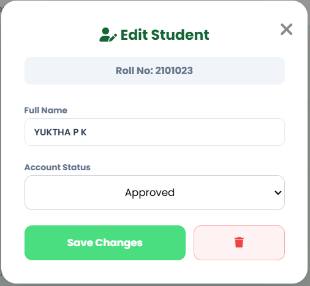
2. Direct Messaging
- Click the Chat Icon on a student's card to send a direct, private message to that specific student. This will appear securely in their app's Inbox.
Student Performance Dashboard
Clicking directly on a Student's Name Card opens their comprehensive academic profile.
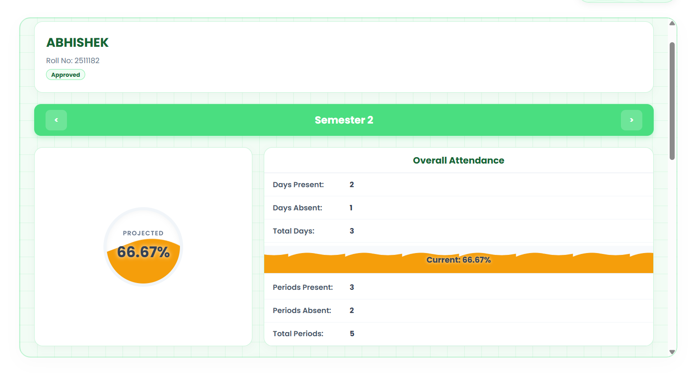
Attendance Overview
- Projected Percentage: The large circular wave visualizes their projected attendance if they attend all remaining classes.
- Raw Statistics: The cards on the right display the mathematical breakdown of classes held, periods present, and periods absent.
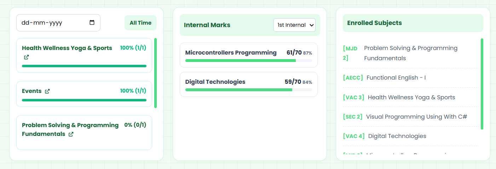
Academics & Curriculum
- Subject-Wise Attendance: Scroll down to see exactly how the student is performing in each specific subject. You can view All Time data or use the date picker to check if they attended all their assigned classes on a specific date.
- Subject Timeline: Click directly on any subject row to open its detailed attendance timeline — a chronological, period-by-period log of every class held for that subject and whether the student was marked Present or Absent on each date.
- Internal Marks: Use the dropdown menu to toggle between different examinations (e.g., 1st Internal, 2nd Internal) to view their uploaded scores.
- Enrolled Subjects: A compiled list of every subject the student is officially enrolled in for the current semester.
Financial Ledger (Pro/Ultimate Tiers)
If your institution utilizes Adhyora's Fee Management system for semester collections, the bottom of the student's profile will display their complete financial ledger.
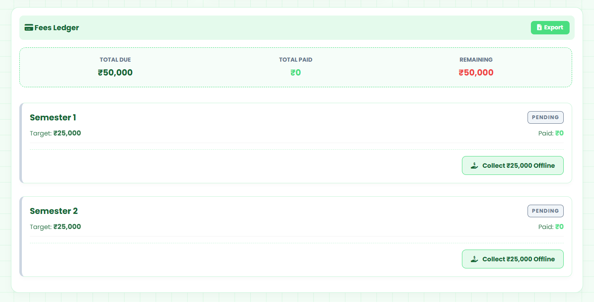
- Ledger Summary: View the student's total target dues, total amount paid, and outstanding balance across all semesters based on the structures you published.
- Online Transactions: If a student pays through the app, the transaction ID, method (Online), and official receipt are automatically logged here.
- Offline Collection: If a student pays their fees directly at the office in cash or cheque, click the Collect Offline button. Enter your Security PIN to securely log the payment into the cloud database and generate an official digital receipt.
Batch Management & Transfers
The Batch Management panel allows you to view and reorganize students who have been split into multiple batches for a specific subject (e.g., practical labs or divided core classes).
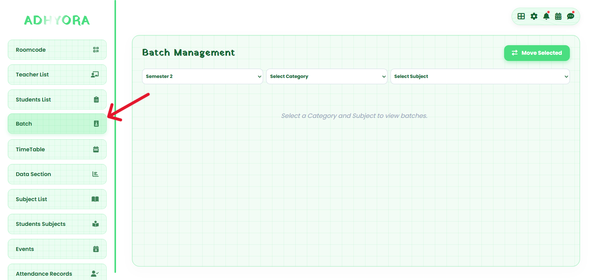
1. Viewing Subject Batches
- Filter Data: Use the top dropdown menus to select the specific Semester, subject Category, and the exact Subject Name.
- If the subject has been divided into multiple batches in the Timetable, the system will instantly load the respective batch cards.
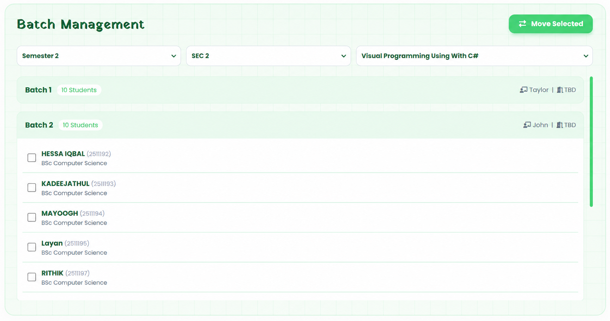
2. Inspecting Batch Rosters
- Expand Cards: Click on any Batch Card (e.g., Batch 1, Batch 2) to expand it and reveal the full student roster.
- Batch Details: The right side of the card header displays the assigned Teacher's Name and the Room Number.
- Student Information: Each row displays the student's Name, Roll Number, and Department.
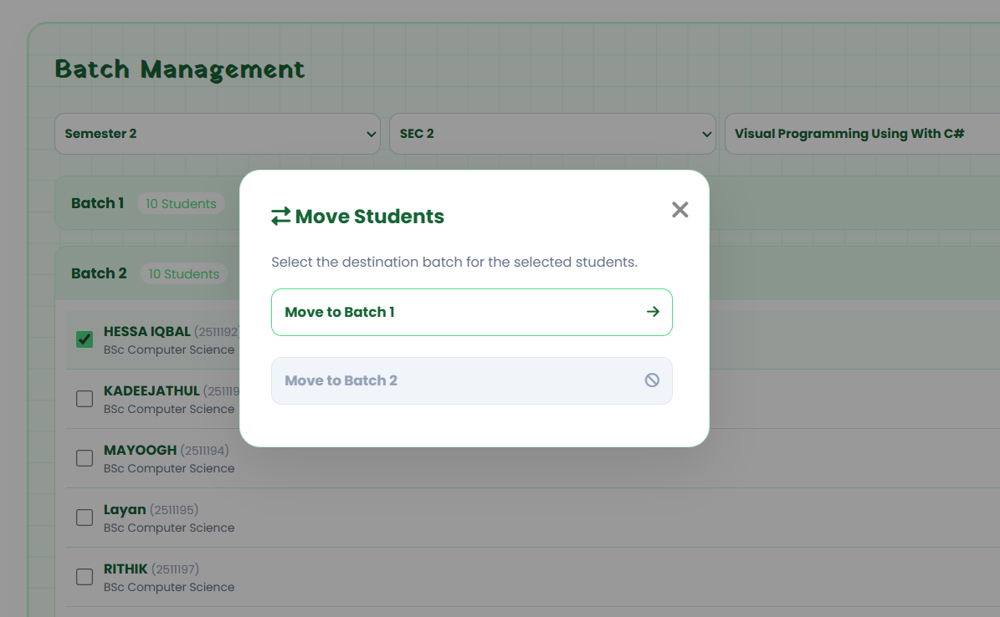
3. Moving Students Between Batches
If a student needs to be transferred to a different batch to balance class sizes or resolve scheduling conflicts, you can execute a secure database transfer.
- Select Students: Click the checkbox (or anywhere on the student's card) to select one or multiple students from a batch.
- Initiate Transfer: Once students are selected, the green Move Selected button at the top right will activate. Click it.
- Select Destination: A popup modal will appear listing all available alternative batches for this subject. The student's current batch will be disabled (greyed out).
- Execute: Click the desired destination batch to securely transfer the students. The system will automatically update the students' and teachers' devices to reflect the new roster.
Master Timetable Management
The Timetable panel allows the Principal to define the foundational academic structure for the entire college, dictating which types of classes occur during each period.
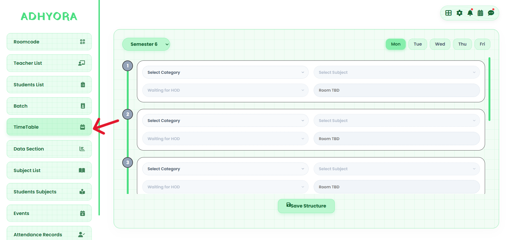
1. Defining the Structure & Categories
Drawing from the NEP guidelines and the Master Subjects CSV you uploaded, you must set the daily framework for every semester.
- Select Semester & Day: Use the top dropdown to select the target Semester, and use the Mon - Fri buttons to switch between days.
- Assign Categories: For each available period, use the dropdown to select the class category (e.g.,
AECC,MJD 4,TUTORIAL). - Save Structure: Once the day is configured, click the green Save Structure button.
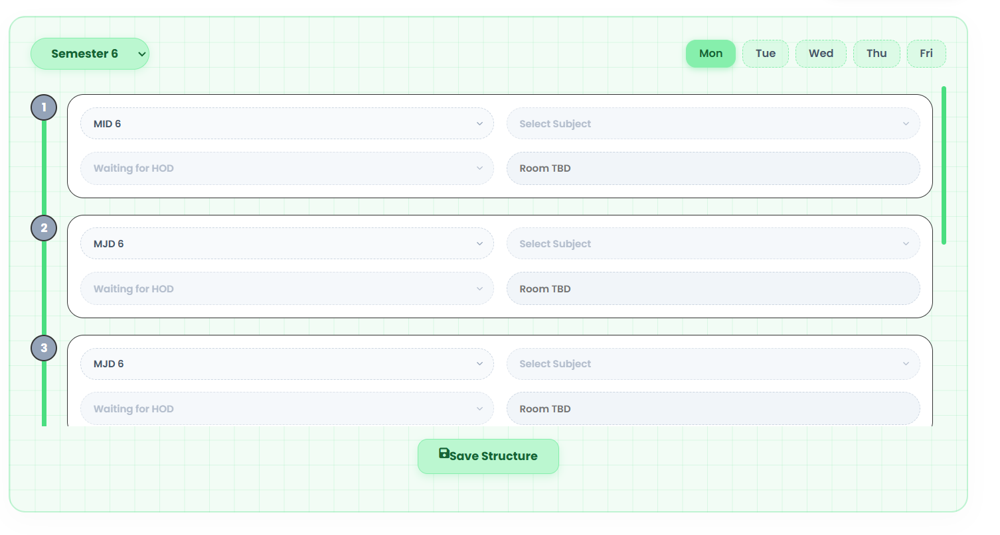
2. Assigning General Subjects
General subjects (e.g., "Health Wellness and Yoga") are not managed by a specific department. Therefore, the Principal must manually assign teachers to these classes.
- After saving a structure, the Assign Classes button will appear at the bottom. Click it to enter the Assignment Panel.
- Select the Semester and Day. The system will automatically filter and display only the periods that contain General/Shared categories.
- Select the exact Subject, pick the Teacher from the dropdown, and enter the physical Room location.
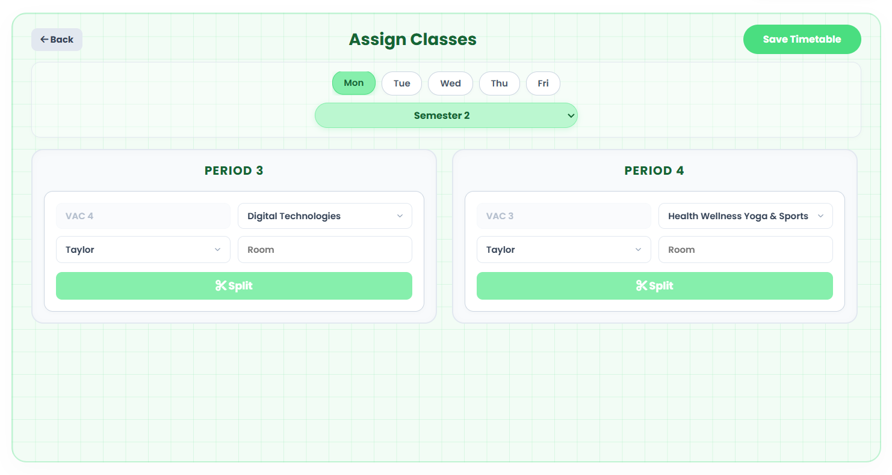
3. Splitting Classes into Batches (Multi-Teacher)
If a shared subject has too many students or requires multiple teachers operating in the same period, you must split the class into distinct batches.
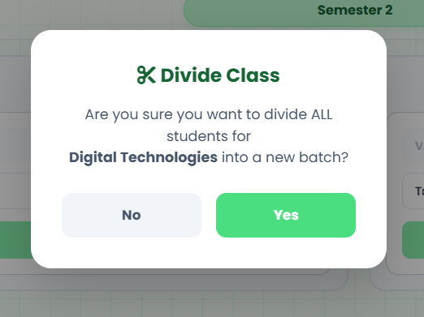
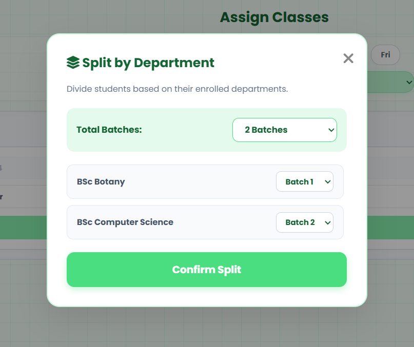
- Click the green Split button on any assigned period.
- A modal will appear analyzing the students enrolled in this subject across different departments.
- Select the Total Batches required (e.g., 2 Batches).
- Map each participating Department to a specific batch (e.g., BSc Computer Science goes to Batch 1).
- Click Confirm Split. The period card will duplicate into multiple batch cards, allowing you to assign a different Teacher and Room to each batch.
Once all teachers and batches are configured, click the green Save Timetable button at the top right of the screen to lock in the assignments and push the schedule live to the students and faculty.
Subject Master List
The Subject Master panel serves as the complete repository of all courses offered at your institution. This list is initially populated by your Master CSV upload but can be manually managed here.
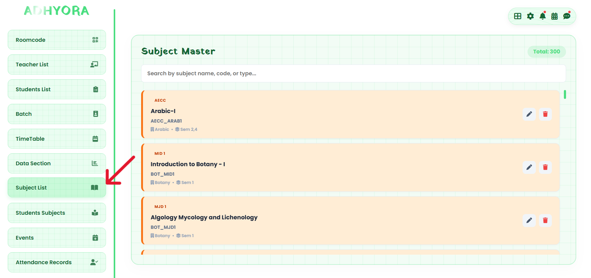
1. Searching & Filtering
- Use the top search bar to instantly find any subject by typing its Subject Name, Subject Code, or Category/Type (e.g., AECC, CORE, VAC).
2. Editing a Subject
- If there is a typo or structural change required for a course, click the Edit (Pen) icon on its respective card.
- Modify the Subject Code, Name, Category, Offering Department, or applicable Semesters.
- Click Save Changes. You will be prompted to enter your Security PIN to authenticate this modification.
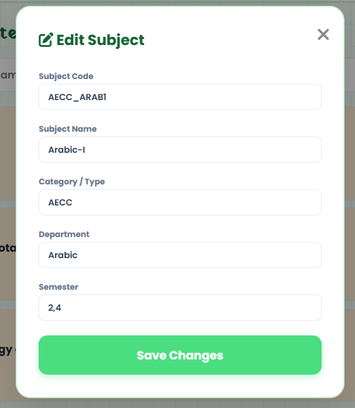
3. Deleting a Subject
- If a course is permanently removed from the college curriculum, click the red Trash icon.
- A warning popup will ask you to confirm the deletion of the specific subject and code.
- Click Yes and provide your Security PIN to execute the secure deletion from the database.
Student Subject Reassignment
The Student Subjects panel provides a granular view of exactly which students are enrolled in specific subjects. It is primarily used to reassign students between elective or language courses (like AECC, SEC, VAC) if they wish to change their curriculum track.
1. Viewing Enrolled Students
- Navigate to the Students Subjects tab on the main sidebar.
- Use the dropdown menus to progressively filter by Semester, subject Category (e.g., AECC), and the specific Subject Name.
- The system will dynamically load a list of all students officially enrolled in that course across all departments.
2. Reassigning Subjects
If a student requests a transfer to a different subject within the same category (e.g., switching from Functional English to Arabic), you can process that move here.
- Select Students: Check the box next to one or multiple students you wish to transfer.
- Initiate Move: Click the green Move Selected button at the top right.
- Select Destination: A popup will appear. Use the dropdown to select the new subject. Note: The system intelligently restricts the destination options to subjects within the exact same category to prevent invalid curriculum assignments.
- Confirm: Click Confirm Reassignment. You will be prompted to enter your Security PIN to authenticate and finalize the database transfer.
Event Requests & Approvals
The Events panel allows the Principal to review and approve special extracurricular activities or duties (e.g., NSS, NCC, Sports) requested by teachers. Approving an event automatically grants attendance to all participating students for that specific period.
1. Reviewing Event Requests
- When a teacher submits an event attendance request from their portal, it appears here with a Pending status.
- The event card displays the Event Name, the Requesting Teacher, the Date, and the specific Period.
2. Inspecting Participants & Approving
- View Students: Click on any Pending event card to expand it. This reveals the complete roster of students participating in the event, including their Roll Numbers and Departments.
- Grant Attendance: If the request is valid, click the green Approve Event & Save Attendance button.
- The system will securely process the transaction, instantly marking all listed students as "Present" for that specific period, overriding any standard class absence.
Once approved, the card's status updates to Accepted. You can still expand the card at any time to review the list of students who were granted attendance.
Live Attendance Tracker
The Attendance Records panel acts as a "God-Mode" tracker for the Principal. It provides a real-time, bird's-eye view of every teacher, their assigned periods, and whether they have submitted their attendance logs for the day.
1. Viewing & Filtering the Grid
- Day Navigation: Use the top day buttons (Mon, Tue, Wed, etc.) to view the timetable allocations and attendance statuses for different days of the current week.
- Smart Search: Use the search bar to instantly filter the massive grid. You can type a Teacher's Name, a Department, or even a specific Subject Code/Name to isolate specific records.
- Subject Tooltips: Hover your mouse over any abbreviated subject code in the grid to view the full name of the subject.
2. The Color-Coded Status System
The system intelligently monitors the current physical time against the college's bell schedule (which you defined in the Data Section) and color-codes each period block accordingly:
- Black (Default): The class is either currently ongoing or has not yet happened. The deadline to submit attendance has not passed.
- Green (Verified): The officially assigned teacher successfully marked and submitted the attendance for this period.
- Yellow (Substitute): Attendance was marked, but by a substitute teacher (someone other than the faculty member assigned in the timetable).
- Red (Defaulter): The physical time for the period has ended, but the assigned teacher failed to submit the attendance data to the server.
Navigation Bar
The Global Navigation Bar provides instant access to core system tools from anywhere in the app. On a PC or laptop, this bar is locked to the top right corner of the screen. On mobile devices (Android/iOS), it is anchored to the bottom of the screen for easy thumb access.
Settings & Preferences
Click the Gear Icon in the navigation bar to open your Settings panel. This menu controls your app experience, aesthetic preferences, and security configurations.
Profile & Support
- Profile: Displays the Principal's Name and registered Email address.
- Help & Legal: Quick links to Contact Support, visit the Pixelaks Technologies website, and review the Privacy Policy or Terms & Conditions.
App Toggles
- Push Notifications: Enable or disable push notifications delivered directly to your device.
- UI Sounds: Toggle the cinematic sound effects (e.g., button clicks, success chimes) on or off.
Themes & Appearance
Adhyora supports dynamic visual themes to reduce eye strain.
- Click Themes to open the Appearance popup.
- Toggle between a bright Light Mode or a sleek, low-glare Dark Mode.
- Note: The theme applies instantly and is saved across your browser sessions.
Billing & Security
Scroll further down the settings menu to access administrative controls for your institution's subscription and account security.
1. Billing & Subscriptions
- Click to view your current Adhyora plan tier (e.g., Trial, Base, Pro, Ultimate).
- Check your exact Valid Until date.
- Review your total lifetime spend and detailed transaction history (invoices).
- Upgrade or renew your plan directly from this screen.
2. Device Management (Active Sessions)
- Security is a top priority. Click Devices to view a list of every phone, tablet, or PC currently logged into your Principal account.
- Your current device is highlighted in green.
- If you recognize an old or public device, click the red Kick button to immediately revoke its access and sign it out securely.
3. Biometrics & PIN Management
- Enable Biometrics: Toggle this switch to link your device's native fingerprint scanner or Face ID to the app. This allows you to bypass typing the 4-digit PIN for sensitive actions in the future.
- Reset Security PIN: Click to change your 4-digit master PIN. You must re-authenticate with your account password before setting a new PIN.
- Password Resets: If you need to change your master login password, clicking this option will dispatch a secure reset link directly to your registered email address.
System Notifications
The System Inbox is where you receive global updates, maintenance alerts, and official system announcements directly from Adhyora.
Academic Calendar
The Calendar provides a visual overview of your institution's working days, holidays, and semester schedules.
- Navigation: Use the left and right arrows at the top of the widget to jump between different months.
- View Details: Click on any highlighted (red or colored) date to view the specific reason for the holiday or event below the calendar.
- Important Note: This calendar is initially populated from the Calendar CSV you uploaded in the Data Section, but the Principal can override individual days at any time (see below) without needing to re-upload the entire file.
Editing a Day (Working Day / Holiday Override)
Only the Principal can directly edit the calendar. If a date needs to change — for example, a sudden holiday declaration, or a Saturday that has been declared a working day to make up for lost classes — you can override it directly from this widget instead of re-uploading the Calendar CSV.
- Click directly on the date you want to change. A Day Override popup opens showing the selected date.
- Day Type: Choose either Working Day or Holiday from the dropdown.
- Timetable to Follow (weekends only): If you're converting a Saturday or Sunday into a working day, an extra dropdown appears asking which weekday's timetable it should follow (e.g., mark a working Saturday to run "Monday's" schedule). This step is skipped automatically for regular weekdays.
- Click Save. The change is written instantly to the college's working-day/non-working-day records for that academic year, and the calendar view refreshes immediately to reflect it.
Inbox & Broadcasts
The Messages panel is your centralized communication hub for sending announcements to the college and reviewing private chats.
1. Reading Messages & Delivery Status
- The inbox aggregates both incoming messages and your sent history. Each card displays the sender/recipient name, time, and message type.
- Read Receipts (Blue Ticks): For direct, personal messages, a double-tick icon will turn blue when the recipient has opened and read the message.
- Broadcasts: Mass announcement messages do not track individual read receipts. They are identified visually by a pushpin icon.
2. Composing Targeted Announcements
You can send push notifications directly to specific groups within your college.
- Click the green Compose button at the top right of the Messages panel.
- Target Audience: Check the respective boxes to send your message to Teachers, Students, or both simultaneously.
- Smart Filtering: Use the dropdown menus to narrow your audience. You can broadcast to the entire college, or target a specific Department and Year.
- Enter your message title and description, then hit send to instantly push the alert to their devices.
Accountant Portal Guide
The Accountant Portal is a dedicated financial management workspace available exclusively on the Pro and Ultimate plans. The Accountant handles all fee collection, payment tracking, receipt generation, and institutional expense recording.
First Login & Security Setup
- Security PIN: Set a 4-digit PIN on first login after Principal approval. This PIN is required before viewing fee data, processing collections, and generating receipts. Do not share it with anyone.
- Biometrics (Optional): Link your device fingerprint or Face ID for faster authentication. Configurable later in Settings.
Fee Dashboard
The main dashboard gives a real-time overview of the entire institution's fee collection status.
- Collection Summary: Total fees due across the institution, total collected, and outstanding balance at a glance.
- Department Filter: Narrow the view to a specific department's fee status.
- Year Filter: Filter by student year to see collection status for each academic year separately.
- Semester Filter: View collection status for the current or past semesters.
Collect Cash / Cheque Payment
When a student pays fees at the office counter in cash or by cheque, record it here to generate a receipt and update the student's ledger instantly.
- Search for the student by name or roll number.
- Open their fee ledger and click Collect Offline on the relevant semester row.
- Enter: Amount Received, Payment Mode (Cash or Cheque), Cheque Number (if applicable), and Date of Collection.
- Enter your Security PIN to confirm. The system instantly updates the ledger and generates a receipt.
Online Payment Tracking
When a student pays through the Adhyora Fee Portal using Razorpay, the transaction is automatically recorded. No action from the Accountant is required, but all transactions are viewable.
- Online payments appear in the student ledger with Razorpay Transaction ID, payment method, date, and amount.
- Use the Transaction Audit Trail for a chronological log of all online payments across the institution.
- Filter by date range or department to locate specific transactions.
- For payment disputes, locate the transaction using the Transaction ID and verify its status.
Receipts
Official receipts are automatically generated for every payment — online or offline.
- Open any student's fee ledger and click the Receipt icon next to a paid semester entry.
- The system generates a printable high-contrast receipt for a standard 80mm thermal printer.
- Click Print Receipt to send to a thermal printer, or Download to save as an image file.
- Receipts include: student name, roll number, department, semester, amount paid, payment mode, date, and unique transaction reference.
Fee Defaulter Report
Identify students with outstanding dues past the payment deadline.
- Navigate to the Defaulter Report section from your dashboard.
- The system automatically lists all students whose payment deadline has passed and who have not fully paid.
- Filter by Department, Year, or Semester.
- Each entry shows: student name, roll number, amount due, original deadline, and days overdue.
- Export the defaulter list as a CSV file for offline use or reporting to management.
Expense Tracking
Record institutional expenses against the institution's accounts for complete financial visibility.
- Navigate to the Expenses section and click Add New Expense.
- Enter: Expense Category (Maintenance, Supplies, Events, Infrastructure), Description, Amount in ₹, Date, and Reference Number (bill or voucher number).
- Enter your Security PIN to confirm the entry.
Settings
- Profile: View registered Name, Email, and institution.
- Push Notifications: Enable or disable payment alerts and due date reminders.
- Biometrics: Enable or disable fingerprint / Face ID.
- Reset Security PIN: Re-authenticate with account password to change PIN.
- Active Sessions: View and Kick unrecognized devices from your account.
Office Staff Portal Guide
The Office Staff Portal is a full-featured administrative dashboard for trusted non-teaching personnel. Staff have broad operational access — they can manage students, teachers, room codes, timetables, subjects, events, and data uploads — but are blocked from sensitive financial configuration, semester-level system changes, and teacher registration approvals.
Registration & Principal Approval
- Select Office Staff on the main gateway and register with Name, Email, and Password.
- Registration is only possible if the Principal has set the Max Staff limit above zero in the Role Registration Limits card. If the limit is 0, the registration will be rejected immediately at the gateway.
- Once registered, the account is placed in Pending status. The staff member cannot log in until the Principal explicitly approves the account from the Teacher/Staff List.
- On first login after approval, a mandatory 4-digit Security PIN must be set before accessing any data.
- Biometrics can be optionally enabled for faster PIN bypass.
What Office Staff Can Do
- Room Code Manager: View all department room codes. Add new departments, regenerate individual or all department codes, delete departments, and combine departments — all PIN-protected.
- Teacher List: View all registered teachers with department, status, and email. Assign or remove HOD designation (PIN required). Send direct private messages to any teacher.
- Student List: Search and view all student profiles including attendance, marks, and enrolled subjects. Approve or Decline student account registrations, correct name errors, and delete student records — all PIN-protected.
- Batch Management: View all batch rosters. Move students between batches (PIN required). Run batch repair if data inconsistencies are detected (PIN required).
- Timetable: View the live timetable. Build and save the Master Timetable Structure (PIN required). Assign subjects to teachers in the timetable (PIN required).
- Data Section: Upload master CSV files — Students, Subjects, and Academic Calendar (PIN required). Generate and download all data exports (attendance statistics, internal marks, daily period-by-period logs) at any time.
- Subject Master List: View all subjects. Edit subject details and delete subjects (both PIN-protected).
- Students Subjects: View student subject enrollments. Move students between elective or language subjects (PIN required).
- Events: View all teacher-submitted event attendance requests. Approve pending events to save attendance for the listed students.
- Attendance Records: View the Live Attendance Tracker — a read-only daily grid of all teacher attendance activity.
- Announcements: Send broadcast messages to teachers and/or students, filtered by department and year. Send personal direct messages to individual teachers or students.
- Notification Inbox: View all system and broadcast notifications received.
What Office Staff Cannot Do
- Approve or Decline teacher registrations — Staff can view the Teacher List and send messages, but the status approval dropdown is not available. Only the Principal can approve or decline teacher accounts.
- Configure the bell schedule — The period count, start time, and timing configuration in Timetable Setup is blocked at the server level for Staff, even though the rest of the Timetable panel is accessible.
- Flip the active semester — Only the Principal can switch between Odd and Even semesters.
- Promote students — End-of-year student promotion to the next semester is Principal-only.
- Change Event Approval Mode — Switching between Strict and Auto-Approve event modes is Principal-only.
- Configure Razorpay API keys or publish fee structures — All payment gateway setup and fee publishing is Principal-only.
- Process or void fee payments — All fee collection and expense management is Accountant-only.
- View or manage Billing and Subscription — The subscription and plan information is not visible in the Staff portal.
- Change Role Registration Limits — Only the Principal can control how many Staff or Accountant accounts are permitted.
- Change the institution's Security PIN — Only the Principal can update the college-level admin PIN.
Student Management
The Staff student management interface is identical to the Principal's Student List.
- Search for any student by name or roll number.
- Click the Shield Icon to open the admin panel — correct names, approve or decline account access, or delete a record. All write actions require the Security PIN.
- Click a student's name card to open their full academic profile — attendance percentage, subject-wise breakdown, and enrolled subjects.
- Click the Chat Icon on any student card to send a direct private message.
Teacher Management
- View all registered teachers with their department, email, HOD status, and registration status.
- Click the HOD checkbox on any teacher card to assign or remove Head of Department designation — requires Security PIN.
- Click any teacher's name card to open their performance dashboard — total hours taught, subject breakdown, and attendance timeline.
- Click the Chat Icon on any teacher card to send a direct private message.
- Note: The Approve / Decline status dropdown visible to the Principal is not shown to Staff. Teacher registration approvals are handled exclusively by the Principal.
Data Exports
- Open the Data Section from the sidebar and click Open Exporter.
- Select Department and Academic Year.
- Download Internal Marks, Attendance Statistics, or Daily Attendance Logs (period-by-period) as CSV files.
- Exports can be generated at any time independently — no Principal action required.
Settings
- Profile: View Name, Email, and institution name.
- Push Notifications: Enable or disable push alerts on this device.
- UI Sounds: Toggle interface sound effects on or off.
- Themes: Switch between Light and Dark Mode.
- Biometrics: Enable or disable fingerprint or Face ID for PIN bypass.
- Reset Security PIN: Re-authenticate with your account password to set a new PIN.
- Active Sessions: View all browsers and devices currently logged into your Staff account. Use the Kick button to remotely log out any unrecognised session.